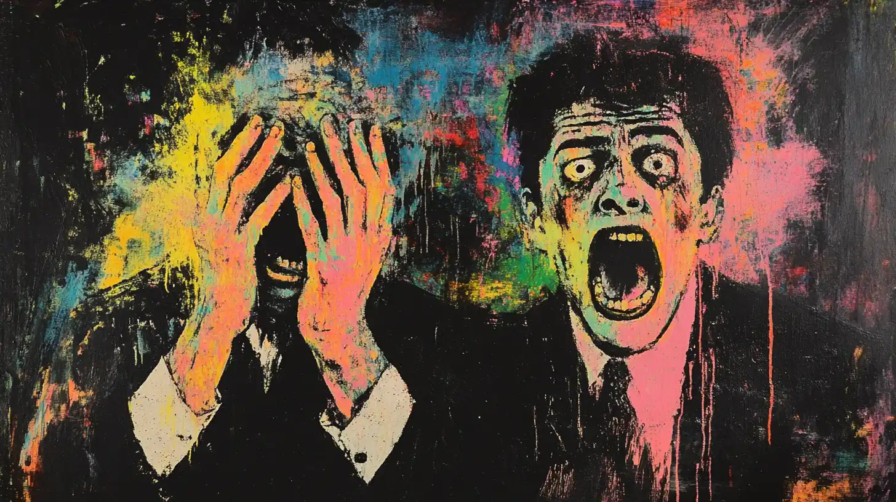
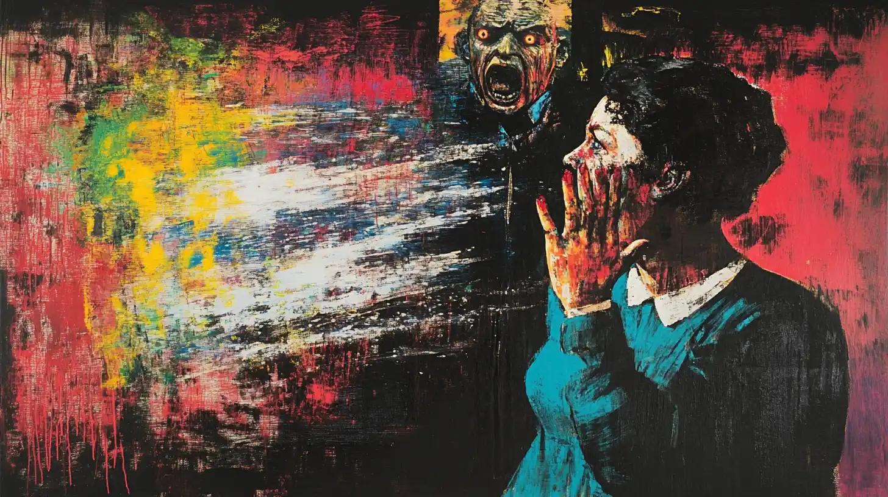
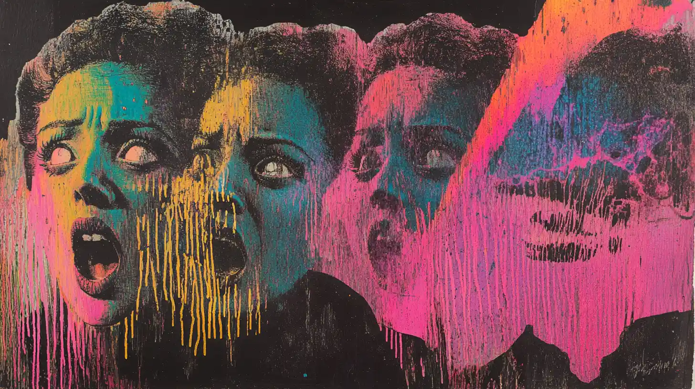
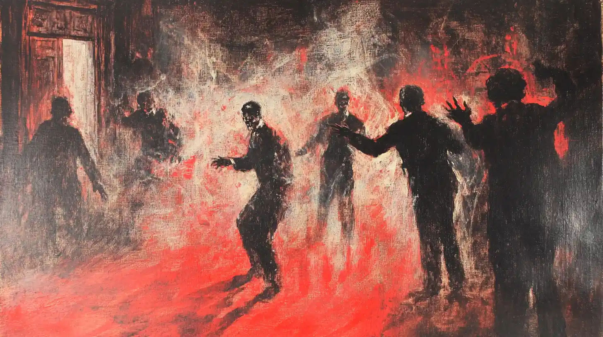
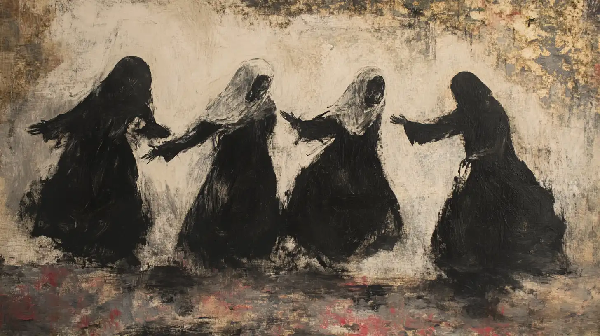
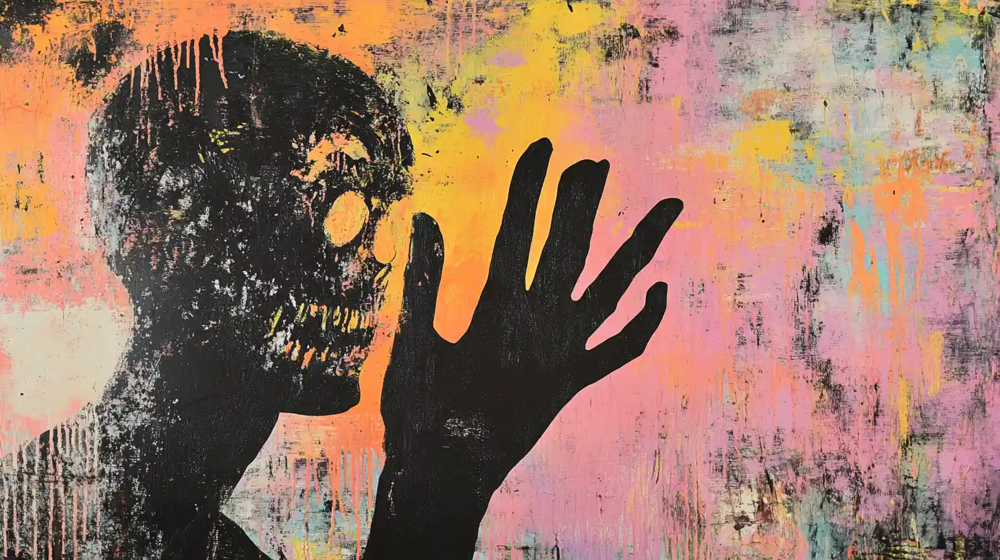
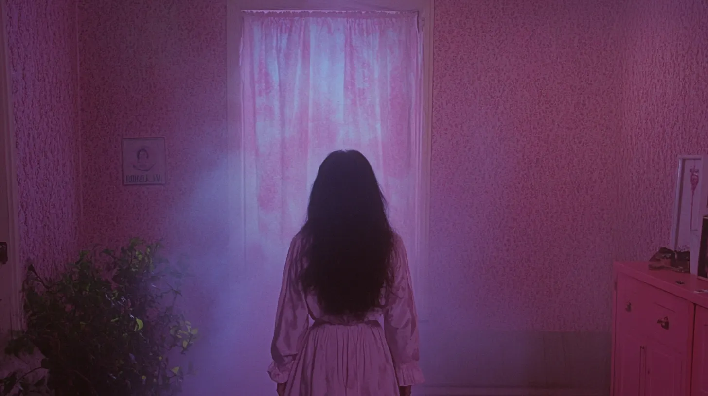
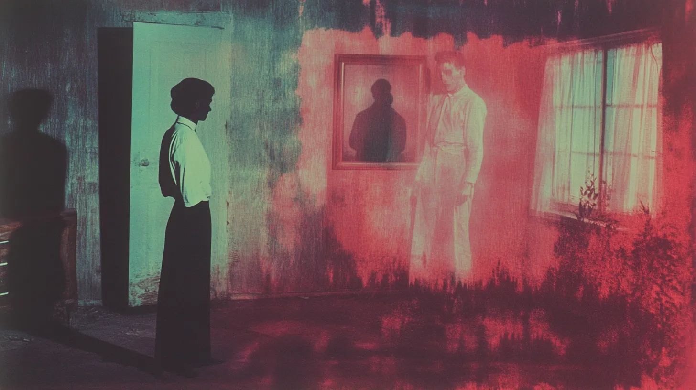

| |
Haunted Places | Paranormal Activities | Exorcisms & Possessions | Social Platforms | Horror Movies | Common Signs | Contact Us |
|---|
Exorcism
(from Ancient Greek ἐξορκισμός (exorkismós) 'binding by oath') is the religious or spiritual practice of evicting demons, jinns, or other malevolent spiritual entities from a person, or an area, that is believed to be possessed. Depending on the spiritual beliefs of the exorcist, this may be done by causing the entity to swear an oath, performing an elaborate ritual, or simply by commanding it to depart in the name of a higher power. The practice is ancient and part of the belief system of many cultures and religions.Possession
Spirit possession, psychokinetic control of the behavior of a living thing or natural object by a spiritual being. Also psychokinetic control of a person by the Devil or other malevolent spirit.
The Ancient Origins of Exorcisms
The concept of exorcism isn’t a modern invention. It dates back thousands of years, with roots in ancient civilizations across the globe. In ancient Mesopotamia, priests performed rituals to expel evil spirits from afflicted individuals. Similarly, ancient Egyptians believed in the power of exorcism to cleanse the soul. These early practices laid the groundwork for the religious and cultural interpretations of exorcism that we see today.
Across various cultures, exorcism rituals evolved, often intertwined with religious beliefs. In Christianity, exorcisms became more structured during the Middle Ages, with detailed rites and prayers designed to combat demonic possession. Meanwhile, in Hinduism and Buddhism, exorcism rituals were performed to appease malevolent spirits and restore harmony.
Despite the differences in methods and beliefs, the common thread throughout history is the belief in malevolent forces that can possess individuals, causing physical and mental distress. These early practices continue to influence modern interpretations of exorcism, adding layers of complexity to the theme in horror.
Are Exorcisms Real?
Exorcisms are real. These rituals have long been part of religious practices. According to the Catholic Church, there are two types of exorcisms:
The Church follows strict guidelines and ensure that medical and psychiatric evaluations are done before proceeding:
While many Protestant denominations teach deliverance ministry, it has been observed that many Evangelical and charismatic churches actively practice exorcisms and see them as part of spiritual warfare.
MOST FAMOUS EXORCISMS IN HISTORY
There have been many incidents in history claiming people were possessed by demons. Here are some of the most famous exorcisms to date:
1. ANNELIESE MICHEL (GERMANY, 1976)
In 1976, Anneliese Michel was a 23-year-old German woman who underwent 67 exorcisms over 10 months, leading to her death from starvation and dehydration. She allegedly barked, ate insects, and spoke as multiple demons (including Hitler and Judas). Her family and priests were convicted of negligent homicide.
2. ROLAND DOE (USA, 1949)
The Roland Doe case in 1949 inspired The Exorcist. The story goes that a 14-year-old boy exhibited levitation, supernatural strength, and spoke in guttural voices. Scratches spelling “LOUIS” appeared on his body, prompting a month-long ritual by Jesuit priests in St. Louis.

3. CLARA GERMANA CELE (SOUTH AFRICA, 1906)
In 1906, a 16-year-old Zulu girl reportedly levitated 5 feet, spoke Polish and French (languages she’d never learned), and stretched her limbs unnaturally. Priests required eight people to restrain her during exorcisms.

4. EMMA SCHMIDT/ANNA ECKLUND (USA, 1928)
A 46-year-old woman named Emma Schmidt endured a 23-day exorcism in 1928. She vomited “impossible quantities” of macaroni and tea leaves. It’s said she levitated to the ceiling and claimed possession by her abusive father and Beelzebub.

5. GEORGE LUKINS (ENGLAND, 1788)
Known as the “Yatton Demoniac,” George Lukins sang hymns backward, convulsed violently, and required seven clergymen to exorcise his “seven demons.” The ritual occurred on Friday the 13th, 1788.

6. THE LOUDUN NUNS (FRANCE, 1632–1634)
In the early 1600s, a convent of Ursuline nuns accused priest Urbain Grandier of bewitching them. The nuns displayed public fits, levitation, and blasphemous acts. Grandier was burned at the stake after a forged “devil’s pact” was presented.

7. ARNE CHEYENNE JOHNSON (USA, 1981)
The “Devil Made Me Do It” case (1981). Arne Cheyenne Johnson murdered his landlord after allegedly absorbing a demon during his brother-in-law’s exorcism. The defense argued possession, but he was convicted of manslaughter.

8. MICHAEL TAYLOR (ENGLAND, 1974)
After a 24-hour exorcism failed to remove “40 demons,” Michael Taylor murdered his wife in 1974. He tore out her eyes and tongue and strangled their dog. He was institutionalized indefinitely afterward.
9. THE SMURL POLTERGEIST (USA, 1980S)
A Pennsylvania family claimed their home was haunted by a demon that sexually assaulted them and threw their dog against walls in the 1980s. Paranormal investigators, Ed and Lorraine Warren performed multiple failed exorcisms.

10. PERRON FAMILY HAUNTING (USA, 1970S)
The Perron Family Haunting in the 1970s was the inspiration for the movie The Conjuring. The family reported apparitions, physical attacks, and possession of the matriarch by a murderous spirit. Exorcisms by the Warrens were reportedly unsuccessful.

Some Famous Exorcists
Catholic Exorcists
- Candido Amantini (1914–1992)
- Gabriele Amorth (1925–2016)
- Raymond J. Bishop (1906–1978)
- William S. Bowdern (1897–1983)
- Jeremy Davies (1935–2022)
- Joseph de Tonquedec (1868–1962)
- Thomas J. Euteneuer (1962)
- Angelo Fantoni (1903–1992)
- Pope John Paul II[1][2] (1920–2005)
- Walter Halloran (1921–2005)
- Peter Heier (1895–1982)
- Edward Hughes (1918–1980)
- Lawrence Kenny (1896–1977)
- Tadig Kozh (Placide Guillermic) (1788–1873)
- James J. LeBar (1936–2008)
- Malachi Martin (1921–1999)
- Emmanuel Milingo (1930)
- Pio of Pietrelcina (1887–1968)
- Theophilus Riesinger (1868–1941)
- José Antonio Fortea (born 1968)
- Vince Lampert (born 1963)
- Chad Ripperger (born 1964)
Orthodox Exorcists
- Avvákum Petróv (1621–1682)
Baptist, Evangelical, and Pentecostal Exorcists
- Brian Connor (Baptist) (1946–2014), also taught people about spiritual warfare.
- Frank Hammond (Baptist) (1921–2005)
- Edir Macedo[3] (Pentecostal) (born 1945)
- Derek Prince (Pentecostal) (1915–2003)
- Charles H. Kraft (Evangelical) (born 1932)
- Bob Larson (Evangelical) (born 1944)
Anglican Exorcists
- Christopher Neil-Smith (1920–1995)
- Bill Subritzky (1925–2015)
Lutheran Exorcists
- Johann Blumhardt (1805–1880)
A Footage Of Exorcism
Beyond The Veil |
||
|---|---|---|
|
Explore the unexplained and discover mysteries that challenge the ordinary. |
||
|
||
|
|